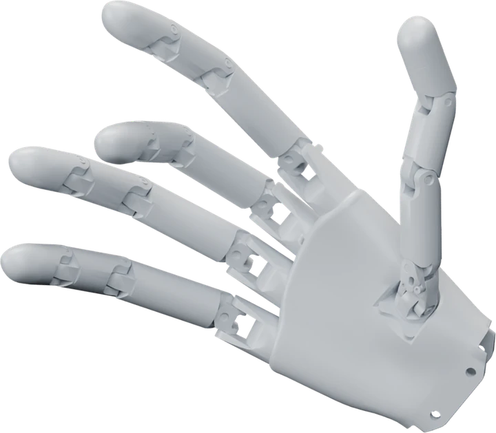
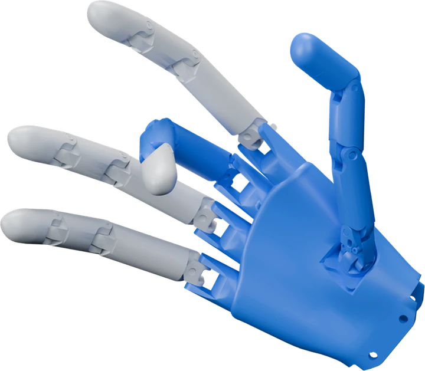
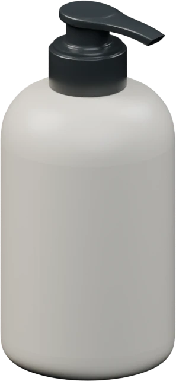
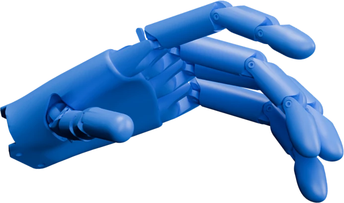
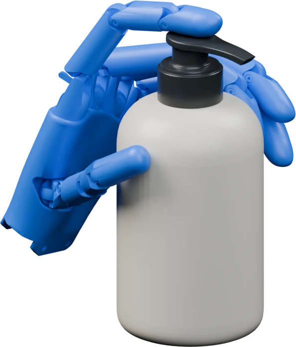
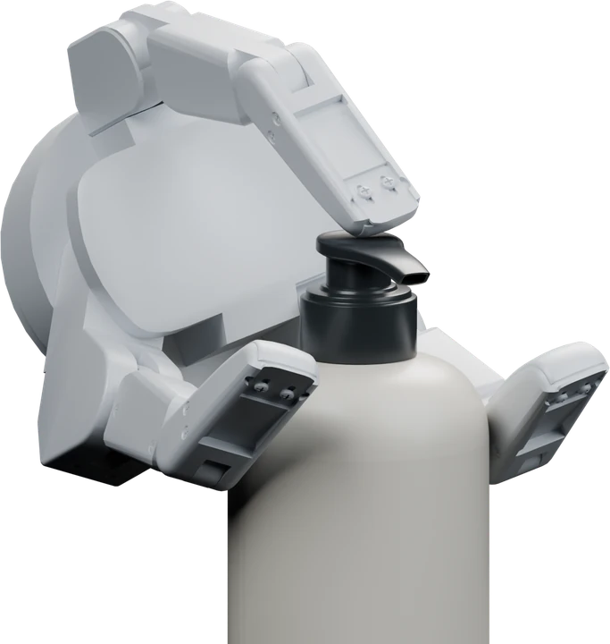
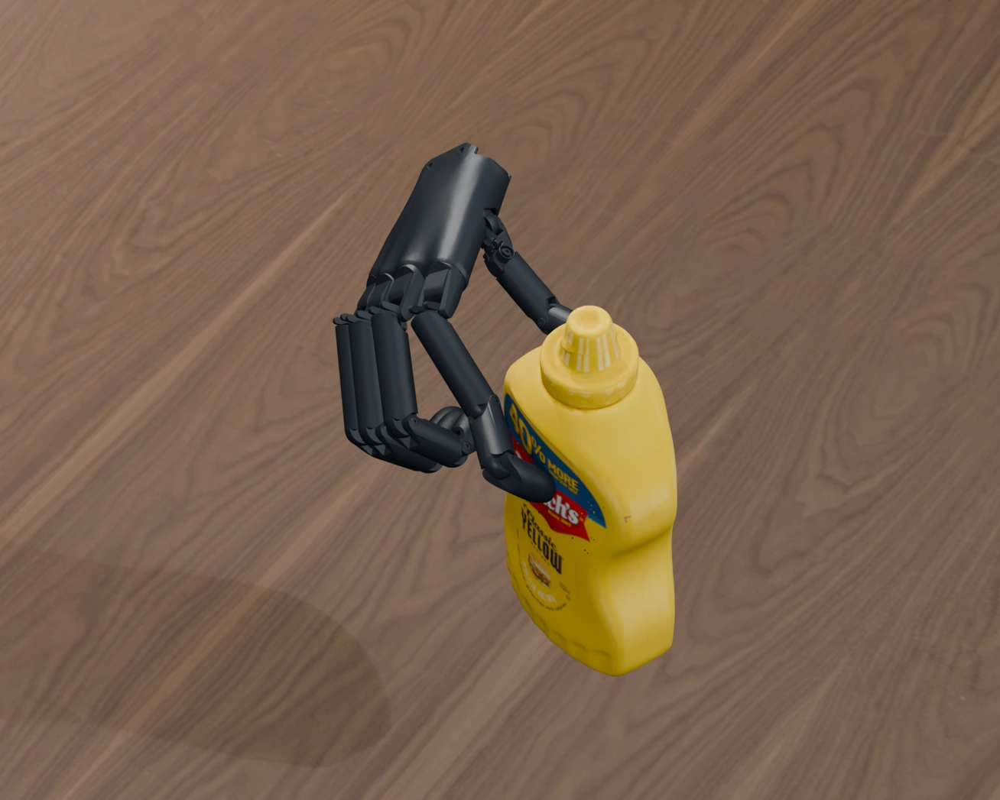
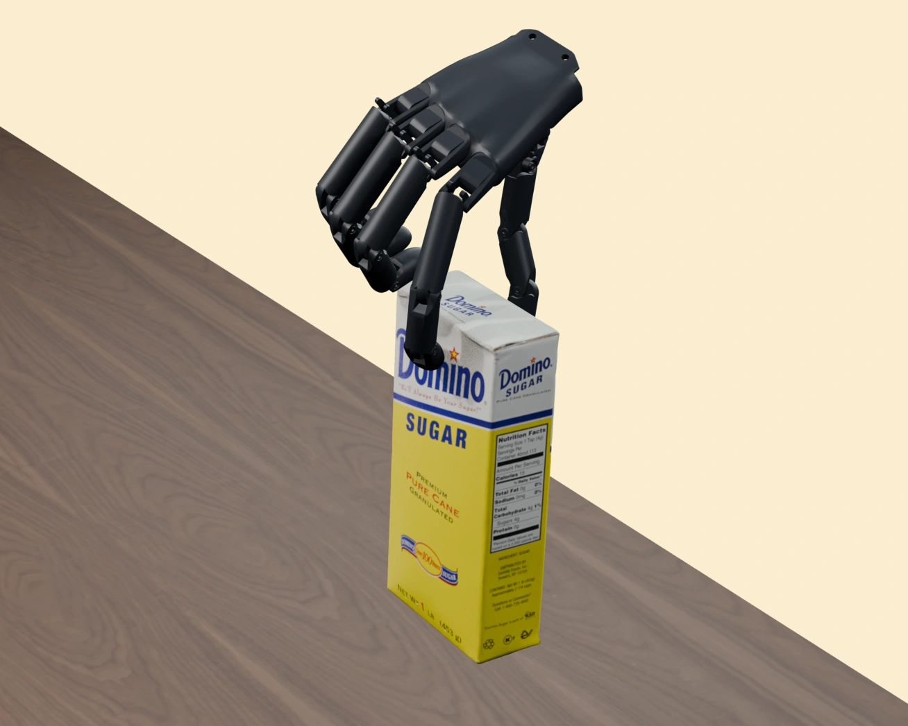
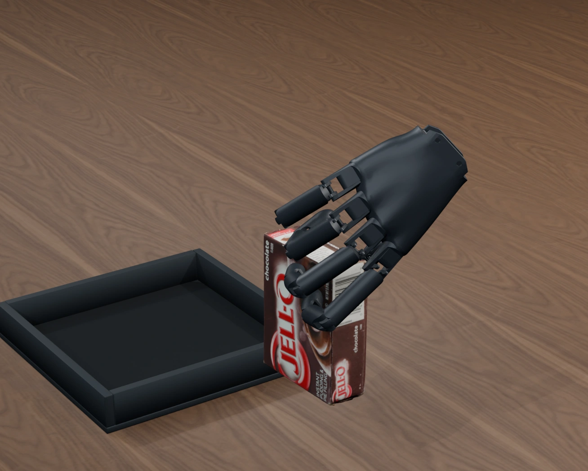

Generalizing manipulation policies across robot embodiments remains difficult because standard policies tie the interactions needed for a task to the actions of a particular robot. We study zero-shot cross-embodiment manipulation, where a policy trained on source embodiments must be deployed on a structurally different target embodiment without additional task demonstrations. We introduce Kinematic Interaction Transfer across Embodiments (KITE), which decouples manipulation into embodiment-agnostic interaction prediction and embodiment-specific kinematic decoding, connected through a learned representation of interaction intent based on contact patterns. An interaction policy is trained to predict the intent using demonstration data only collected on a source robot, and shared across morphologically different target robots. A kinematic decoder realizes these intents by learning from synthetic data generated from each embodiment's kinematic model. Through such decoupling, KITE can robustly transfer learned skills to a new embodiment given only its kinematic model, without recollecting any task-specific demonstration data. We evaluate KITE on four manipulation tasks in simulation and the real world spanning transfer between parallel grippers, dexterous hands, and composite embodiments. KITE successfully achieves zero-shot transfer to structurally different target embodiments, and consistently outperforms state-of-the-art baselines.
Kinematic Interaction Transfer across Embodiments (KITE)
KITE enables cross-embodiment transfer without recollecting demonstration data for target robots. It decouples manipulation into embodiment-agnostic interaction prediction and embodiment-specific kinematic decoding, connected through a learned, contact-based representation of interaction intent.
Embodiment-specific learning
Kinematic decoding, learned from kinematic models
Data synthesis
qcontact
Perturbation

qinit
Masking

qgoal
Same recipe for every embodiment
BarrettAllegroWujiRobotiq+Stick
Model training
c
ψz
qinit
ge
qgoal
SharedSpecific
Embodiment-specific kinematic decoding. A kinematic decoder maps a latent intent and the embodiment's current configuration to a goal configuration that realizes the intended interaction. The intent encoder and decoder bank are trained jointly on synthetic data generated from the kinematic models of the source and target embodiments, without any task demonstrations.
Embodiment-specific
Embodiment-agnostic
Click to tryClick to tryClick to try

otObservation
zt−1Previous latent intent

qetRobot state

aetAction
Interaction intent
How to approach and contact an object, without specifying which fingers or tools to use.
Source demonstrationct points and normalsIntent encoderψzt shared latent space
Embodiment-agnostic learning
Interaction prediction, learned from source demonstrations
Demonstration preprocessing

qsrctContact extractionctψfrozenzt
Model training
otzt−1
πzt
Off-the-shelf imitation learning
Embodiment-agnostic interaction prediction. An interaction policy predicts the next latent intent from the scene observation and the previous latent intent. It learns from source demonstrations preprocessed into the shared latent space and is reused across target embodiments. Training the policy thus reduces to standard imitation learning in the latent space, so an off-the-shelf imitation learner can be used with its architecture untouched.
At deployment, the interaction policy predicts the next latent intent from live observations, and the target's kinematic decoder converts it into a motor command. For an embodiment outside the pretrained set, we add its input and output projectors and fine-tune the decoder bank using synthetic kinematic data from the existing and new embodiments. The intent encoder stays fixed, so existing interaction policies are reused unchanged.
Simulated Experiments
We evaluate four tasks across six robot embodiments: Robotiq, Barrett, Allegro, Wuji, XHand, and Robotiq+Stick. The intent encoder and decoder bank are pretrained on the kinematic models of all involved embodiments, then frozen and reused across tasks. Each task has its own interaction policy, trained only on source demonstrations.
KITE achieves an average success rate of 86.4% across 12 task–target settings. Each target is evaluated on 100 held-out episodes per seed, with results averaged across three random seeds.
Objects Placing
Robotiq demonstrations transfer to Barrett, Allegro, and Wuji. The robot picks up an object with randomized position and orientation and places it inside a nearby bin. Training and testing use the same six objects.
Source: Robotiq
Target: Barrett
Target: Allegro
Target: Wuji
Keyboard Pressing
Wuji demonstrations transfer pressing three target keys to Barrett, Allegro, and Robotiq+Stick. Success requires depressing every target key past 50% of its travel, testing spatial precision.
Source: Wuji
Target: Barrett
Target: Allegro
Target: Robotiq+Stick
Bottles Pumping
Wuji demonstrations transfer to Barrett, Allegro, and Robotiq+Stick across three pump bottles. Success requires lifting the bottle and depressing its pump by at least 1 cm each. Robotiq+Stick distributes supporting and pressing contacts across a gripper and a separately actuated stick.
Source: Wuji
Target: Barrett
Target: Allegro
Target: Robotiq+Stick
Nut Rotating
XHand demonstrations transfer sustained contact coordination to Barrett, Allegro, and Wuji. The nut rotates about a fixed stud, and all hand bases remain fixed. Each episode is scored by the target's net rotation divided by the source demonstration's net rotation, clipped to [0, 1].
Source: XHand
Target: Barrett
Target: Allegro
Target: Wuji
Real-World Experiments
We evaluate all four tasks on a Wuji hand mounted on a Tianji Marvin arm, using the same frozen kinematic decoder without target-task demonstrations or real-world fine-tuning. Objects placing transfers from Robotiq, nut rotating from XHand, and keyboard pressing and bottles pumping from human demonstrations.
At deployment, a calibrated ZED camera provides object point clouds filtered with SAM 2 segmentation masks. Each task is evaluated over 10 trials.
Objects Placing
Robotiq → Wuji succeeds in 8/10 trials, picking up an object and placing it inside a nearby bin.
Source: Robotiq
Target: Wuji3×
Keyboard Pressing
Human hand → Wuji succeeds in 8/10 trials. Success requires depressing all three target keys past 50% of their travel.
Source: Human Hand
Target: Wuji3×
Bottles Pumping
Human hand → Wuji succeeds in 6/10 trials, lifting the bottle and depressing its pump by at least 1 cm each.
Source: Human Hand
Target: Wuji3×
Nut Rotating
XHand → Wuji succeeds in 7/10 trials. Success requires rotating the nut by more than π radians.
Source: XHand
Target: Wuji4×
Analysis of KITE
We examine how KITE extends to a new embodiment and how the latent intent interface and decoder supervision affect transfer. We also test sensitivity to the target's initial pose to understand the limits of kinematic decoding.
Adding a new robot
Objects placing success (%, mean ± SD; three seeds)
Target
Before adding Wuji
After adding Wuji
Barrett
74.7 ± 3.1
74.0 ± 2.6
Allegro
84.0 ± 2.6
84.3 ± 2.1
Wuji
N/A
80.0 ± 3.6
N/A: no Wuji decoder.
We exclude Wuji from pretraining, then add its synthetic kinematic data and fine-tune the decoder bank for 50 epochs (10 hours on one RTX 5090), keeping the encoder and policy frozen. Wuji reaches 80.0% success, comparable to joint pretraining, while performance on existing embodiments remains similar.
Kinematics-only decoder supervision
Allegro bottles pumping
Mean ± SD across three random seeds.
Adding 10, 50, or 200 target-task demonstrations improves success by at most 2.7 percentage points in a separate Allegro bottles pumping diagnostic. The limited benefit supports learning target-side contact realization from kinematics alone in this setting.
Latent intent interface
w/o LatentKITE (Full)
Task averages over the three target embodiments.
Predicting raw contact slots instead of latent intents reduces average success by over 30 percentage points on each of the first three tasks. The largest individual drop is on Wuji nut rotating, from 89.3% to 27.3%. The learned interface maps unordered, variable-size contact sets to a fixed-dimensional action space.
Initialization sensitivity
Oracle Intent on Wuji objects placing
Initial-pose perturbation
Success (%)
Base (no perturbation)
85
5 cm, 30°
80
20 cm, 60°
78
Flipped 180°
66
30 cm shift
57
The same source-intent sequences are replayed.
Replaying the same source-intent sequences from different initial hand poses preserves success under modest perturbations, but performance drops with large shifts or a flipped hand. This is consistent with the decoder's local training construction, which does not guarantee intent realization from arbitrary initializations.
Execution Diversity
During objects placing, the Wuji decoder uses different finger combinations across objects, although all demonstrations come from the same Robotiq gripper. It realizes the interaction intents without a prescribed source-to-target part mapping.

Thumb and index finger

Thumb and index finger

Thumb, index, and middle fingers
Comparative Results
We compare KITE (Oracle Intent) with SPIDER to isolate kinematic decoding from interaction prediction. Both use source trajectories: Oracle Intent supplies the frozen decoder with intents encoded from source demonstrations, while SPIDER optimizes target motion using manually specified part correspondences. On bottles pumping, SPIDER loses contact while the kinematic decoder preserves the supporting and pressing interactions.
KITE (Oracle Intent) · Barrett
SPIDER · BarrettPressing contact slips off the pump
KITE (Oracle Intent) · Allegro
SPIDER · AllegroBottle tips over
Video Summary
Acknowledgement
We gratefully acknowledge use of the research computing resources of the Empire AI Consortium, Inc, with support from Empire State Development of the State of New York, the Simons Foundation, and the Secunda Family Foundation. This work was supported in part by the Amazon Research Awards and an NVIDIA Academic Grant. We thank Yunhao Cao, Mengling Zhang, Jialiang Zhang, Chuanruo Ning, Xingyi He, Adhitya Polavaram, Zhenyu Wei, Qi Wu, Cory Fan, and Pranav Thakkar for constructive discussions and feedback. We thank Calvin Qiu, Adhitya Polavaram, Yunhao Cao, and Cory Fan for their generous help on real world and simulation robot infrastructure.
Citation
@misc{wang2026kitedecouplingkinematicsinteraction,
title={KITE: Decoupling Kinematics and Interaction for Zero-Shot Cross-Embodiment Manipulation},
author={Qianxu Wang and Shengmiao Samuel Jin and Kuan Fang},
year={2026},
eprint={2606.22113},
archivePrefix={arXiv},
primaryClass={cs.RO},
url={https://arxiv.org/abs/2606.22113},
}